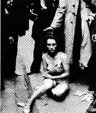

|
Doppelmord
von Dr. Rolf Kornemann
Einführung
Anfang Mai 1995 haben wir uns erinnert, daß der vor 50 Jahren vom deutschen Boden aus entfachte Zweite Weltkrieg zu Ende ging. Je nach persönlicher Herkunft, nach Lebensalter und Bereitschaft, innezuhalten, haben wir uns mit Betroffenheit der unsagbaren Leiden erinnert. Die Veteranen der westlichen Alliierten haben - vermutlich - letztmalig ihres Sieges gedacht. Rußland beging die Gedenkfeiern des vaterländischen Krieges. Im Mittelpunkt all dieser Reflexionen standen allerdings nicht so sehr die bedingungslose Kapitulation und die sich daraus ergebenden völkerrechtlichen Implikationen. Befaßt haben wir uns primär mit den geistigen Strömungen, mit den ökonomischen Rahmenbedingungen, mit den Trends, die in ihrer Vernetzung und Addition auf diesen Tag hinausliefen. Befaßt haben wir uns mit dem Mythos "Adolf Hitler", dem Synonym für das Abscheuliche schlechthin, mit einer heute noch allgegenwärtigen Figur, die zu keiner historischen werden will.
Die seit Kriegsende verflossenen fünf Dezennien sind für einen Menschen eine große Spanne. Zeit genug, zu bedenken, was sich im "Dritten Reich", das formal gesehen lediglich zwölf Jahre bestand, vollzogen hat. In der Tat ist sehr vieles von diesem Zeitabschnitt strukturiert und analysiert worden. Filme, Fernsehserien, hervorragende wissenschaftliche Werke vermitteln denen, die sich damit auseinandersetzen wollen, einen tiefen Einblick in diese Periode. Aber alle Bilder und Schriftsätze blieben - nach meiner Meinung - in ihrer Wirkung bisher begrenzt. Die "Öffentlichkeit" hat ihre Vergangenheit nur bedingt aufgearbeitet. Die Geschehnisse wurden noch nicht einmal bewußt tabuisiert; es war vielmehr das Gefühl des Betäubtseins, das zu dieser Paralyse führte. Auch die großen Strafprozesse konnten kaum etwas ändern:
- Ich nenne den von den Alliierten angestrengten Nürnberger Kriegsprozeß; vor exakt 50 Jahren - am 18. Oktober 1945 - trat der Internationale Militärgerichtshof im Großen Saal des früheren Volksgerichtshofs in Berlin zusammen, um die Anklage gegen Göring und andere entgegenzunehmen.
- Ich erinnere an den Eichmann-Prozeß, der am 16. Dezember 1961 mit der Verkündung des Todesurteils in Jerusalem zu Ende ging.
- Ich erinnere an den Auschwitz-Prozeß, der am 20. Dezember 1963 im Stadtverordnetensaal des Frankfurter "Römers" eröffnet und vor exakt 30 Jahren beendet wurde. Hieran war - ebenfalls zur Erinnerung - der Staatsanwalt Erwin Schüler maßgeblich beteiligt, der erste Leiter der in Ludwigsburg eingerichteten "Zentralen Stelle der Landesjustizverwaltungen zur Verfolgung nationalsozialistischer Gewaltverbrechen".
- Es gab weitere Verfahren; z. B. bestrafte am 25. März 1966 das Oberste Gericht der DDR den Lagerarzt Fischer mit dem Tode.
Diese Gerichtsverfahren konfrontierten uns mit unserer Vergangenheit; sie waren ein Stück
Geschichtsschreibung.  Martin Walser formulierte es 1965 so: "Der Prozeß gegen die Chargen von Auschwitz ist weit mehr als ein Akt der Rechtsprechung. Geschichtserforschung läuft mit, Enthüllung, moralische und politische Aufklärung einer Bevölkerung, die offenbar auf keinem anderen Weg zur Anerkennung der Geschehen zu bringen war."1)
Trotz dieser Verfahren - der Auschwitz-Prozeß war der größte und bis dahin längste Mordprozeß in der deutschen Rechtsgeschichte -, trotz der teilweise hervorragenden wissenschaftlichen Begleitung wie z. B. durch die Professoren Buchheim, Broszat, Jakobsen und Krausnick2), gibt es 50 Jahre nach der Kapitulation Bereiche, die weitgehend unbeachtet blieben. Dazu zählt u.a. die von der NSDAP gegen die Juden betriebene Vermögens- und Wohnungspolitik. Neben der "allgemeinen Politik" wurden spezielle Gesetze, Erlasse und Verordnungen verabschiedet, mittels derer - als Vorstufe der systematisch geplanten und sukzessiv vollzogenen Vertreibung und physischen Auslöschung der Juden - ihre soziale, wohnliche und ihre wirtschaftliche Vernichtung vorausging.3) Hierzu dienten Eingriffe in das Mietrecht, Verbot wohnungswirtschaftlicher Betätigung wie Makeln und vor allem die weitgehend entschädigungslose Enteignung von Vermögen an Haus und Grund einschließlich der mobilen Güter sowie die "Entjudung" von Wohnungen. Mit dem Aufkommen aus der Reichsfluchtsteuer, der Sühneleistung und der Vermögensverwertung geflohener, deportierter und getöteter Juden sollten Aufrüstung und Kriegsfolgen finanziert werden; Zwangsräumungen und anschließende Einweisung in "Judenhäuser", Ghettos und Verbringung in Konzentrationslager waren ein Teil der Stigmatisierung von Juden, zugleich aber auch ein Ansatz, ohne Neubau über mehr Wohnraum zu verfügen.
© Copyright by Dr. Rolf Kornemann
© Layout Birgit Pauli-Haack 1997
|